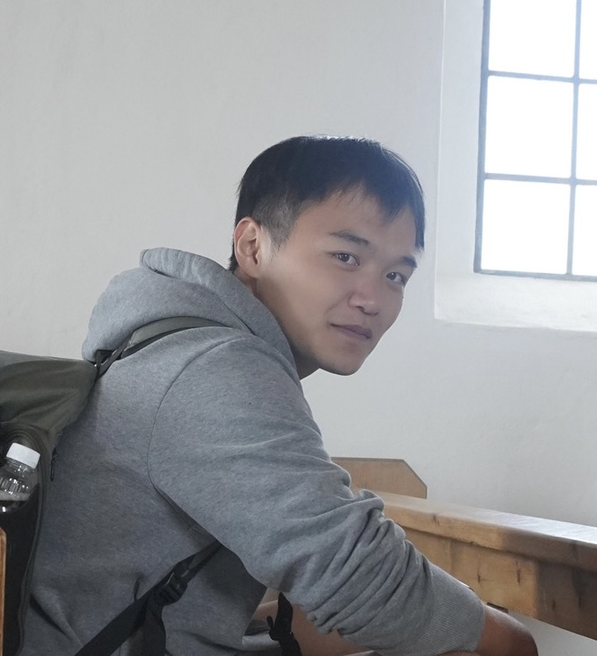

| Yifei Cao I'm a PhD student in psychology at UCLA in Los Angeles, California, where I am supervised by Professor Erie Boorman in Learning and Decision Making Lab. Outside of UCLA, I am also collaborating with Dr. Maria Eckstein in Google DeepMind, and Dr. Xiaoyan Wu in Zurich Psychiatric Hospital. My PhD research focuses on the formation and navigation of human cognitive map, computational modeling of reinforcement learning process, and building artificial neural networks learn and decide like humans. Before coming to UCLA, I earned my Master degree from ETH Zurich and University of Zurich, majored in Interdisciplinary Brain Sciences. In Zurich, I have worked with Professor Valerio Mante, Phillipe Tobler, and Silvia Brem on human reinforcement learning and decision making process. During my time in China, I worked with Professor Gui Xue to investigate the latent cognitive and neural factors contribute to human intelligence. For undergraduate and master students inside and outside UCLA, if you are interested doing a project with me, please reach out. I am always happy to supervise students sharing similar research interests. |  |
  News
Ongoing Projects
Erie Boorman UC Davis · Learning & Decision Making Lab
The Formation of Cogntive Maps in Human Brain and Map-Based Inference and Generalization
Investigating how cognitive maps are formed in human brain, how neural representations of the maps change as learning goes. Previous studies have shown that 2-D map-like representation could be learned in brain regions like entorhinal cortex and hippocampus, while prefrontal cortex tend to compress the representation to 1-D. With Erie, I use behavioral experiment, fMRI, EEG, and hopefully iEEG, and computational models to investigate the change of neural geometry during this learning process, what factor drives the HPC and PFC to form different neural representations, and how these learned neural representations support flexible inference and generalization. 
Maria Eckstein Google DeepMind
Hybrid Neural-Cognitive Models for Reversal Learning
Artificial neural networks are super predictive of human behaviors compared to classical cognitive models, however, the huge amount of parameters makes it hard to interpret the algorithms of mind. Thanks to HybridRNN, the framework raised by DeepMind, we are able to combine the precision of ANNs and interpretability of cognitive modles to understand human learning process. Here, I have been working with Maria to apply HybridRNN to understand the computational process that enable flexible adaptations in reversal learning context, and using dynamical system analysis to understand the internal representations of HybridRNN. 
Xiaoyan Wu Zurich Psychiatric Hospital
Neural Mechanism Underlying Human Altruism Motavations
According to Wu et al., (2024), the motivation of human altruism behavior is driven by a combination of seven different socioeconomic motives, referred to as a motive cocktail. In collaboration with Xiaoyan, we use the EEG and MEG data recorded during participants performing the same task as previous behavioral study, to decode the temporal and neural neural dynamics that support each different types of motives. Important CollaboratorsResearchI am interested in the neural and computational process underlying human learning and decision making. Some papers are highlighted. |


{kind=link}
 | Interpretable Hybrid Neural-Cognitive Models Discover Cognitive Strategies Underlying Flexible Reversal Learning Chonghao Cai, Liyuan Li, Yifei Cao, Maria Eckstein Oral Presentation at Neurips 2025 Coginterp Workshop, 2025 supplement / bibtex Hybrid cognitive and neural network modeling reveal the context-dependent value updating function exist in human flexible learning process. |
 | A position coding model that accounts for the effects of event boundaries on temporal order memory Xiaojing Peng, Yifei Cao, Jintao Sheng, Yu Zhou, Huinan Hu Gui Xue Cognitive Psychology, 2025 bibtex / "smoothing" code We modeled human temporal memory with computational models. |
| The neural representations underlying asymmetric cross-modal prediction of words Liang Shi, Chuqi Liu, Xiaojing Peng, Yifei Cao, Daniel A. Levy Gui Xue Human Brain Mapping, 2023 bibtex / "smoothing" code We investigated the representations of sequence memory in human brain. | |
| Effortful and effortless training of executive functions improve brain multiple demand system activities differently: an activation likelihood estimation meta-analysis of functional neuroimaging studies Chan Tang, Ting Huang, Jipeng Huang, Nuo Xu, Yuan Wang, Yifei Cao Frontiers in Neuroscience, 2023 bibtex / "smoothing" code Using ALE analysis on fMRI results, we synthesized neuroimaging results from over 50 studies to reveal that effortful and effortless training have different effects on human multi-demand brain system. | |
| Effects and moderators of computer-based training on children's executive functions: a systematic review and meta-analysis Yifei Cao, Ting Huang, Jipeng Huang, Xiaochun Xie, Yuan Wang, Frontiers in Psychology, 2020 bibtex / "smoothing" code We investigated whether adding game elements into cognitive training programs improve the effects of the intervention on children's executive functions. |